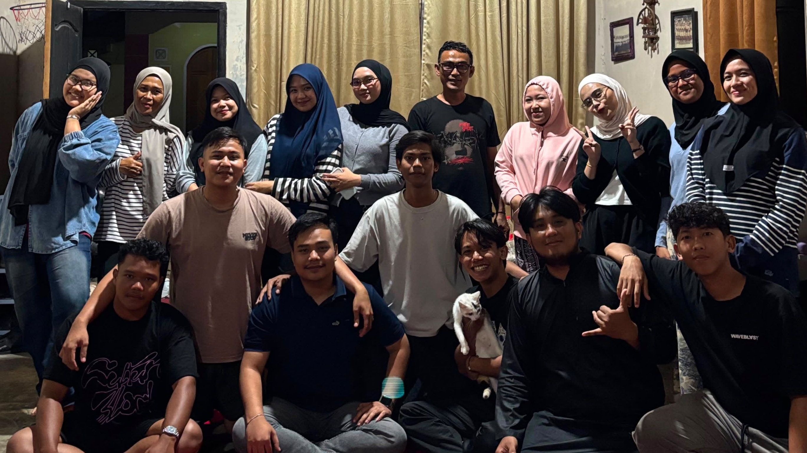
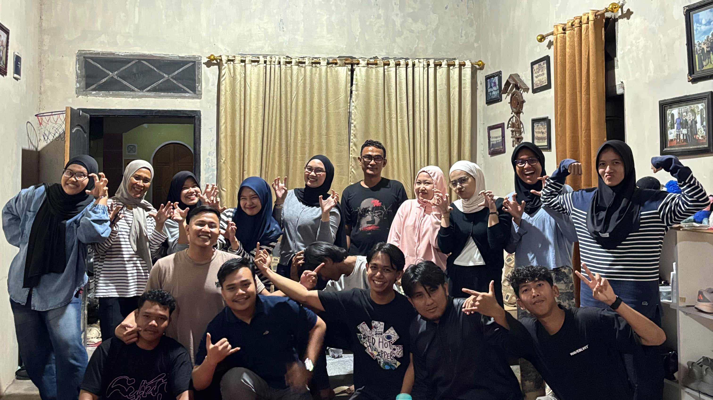
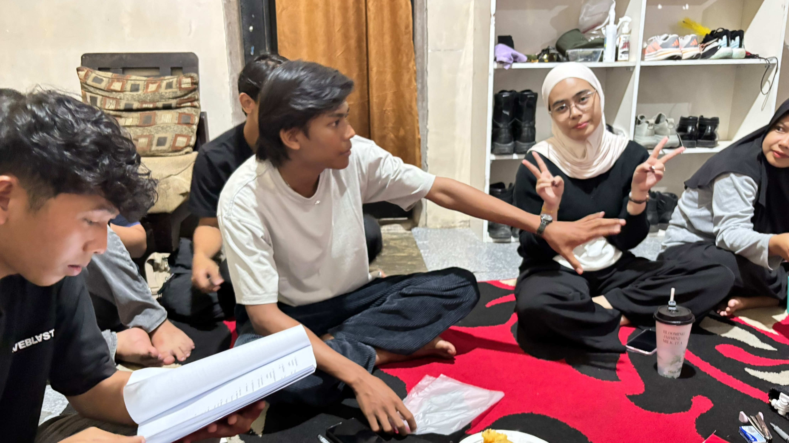

Pemuda Pemudi
RW 06
BTN Lintas Asri · Muara Bungo
Generasi Muda Berkarya, Bersatu, dan Berprestasi untuk Bungo Dani, dan sekitarnya.
Jelajahi
Tentang Kami
Komunitas Pemuda
Wadah bagi Pemuda Pemudi RW 06 untuk mengembangkan potensi, berkarya, dan bersosialisasi di lingkungan BTN Lintas Asri.
Wilayah
Berbasis di kabupaten Muara Bungo, Kec. Bungo Dani, Sungai Kerjan.
Kegiatan
Gotong royong, olahraga, dan seni budaya. Selalu ada aksi positif untuk lingkungan.
Dokumentasi

